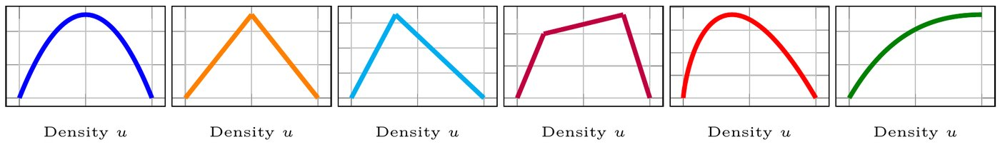
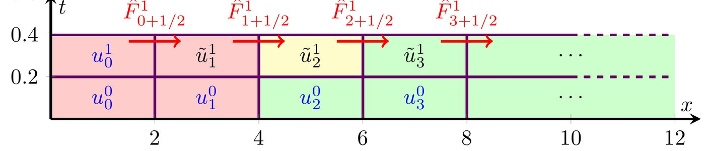
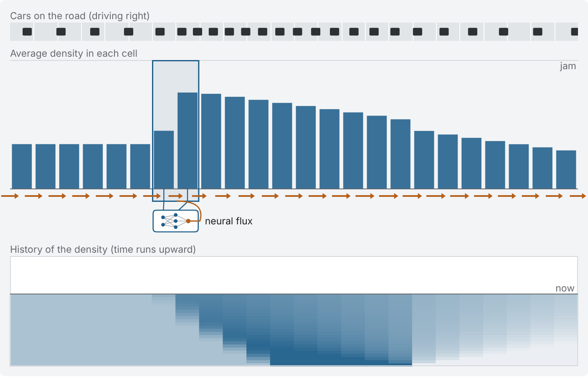
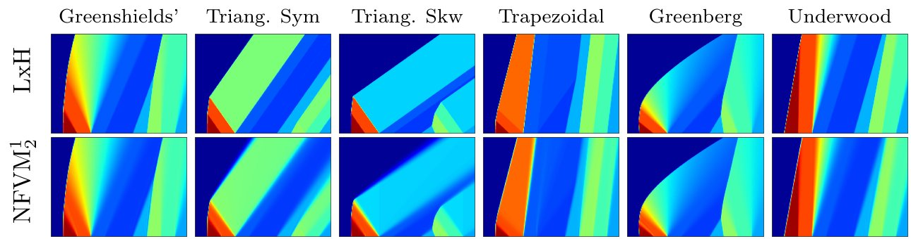
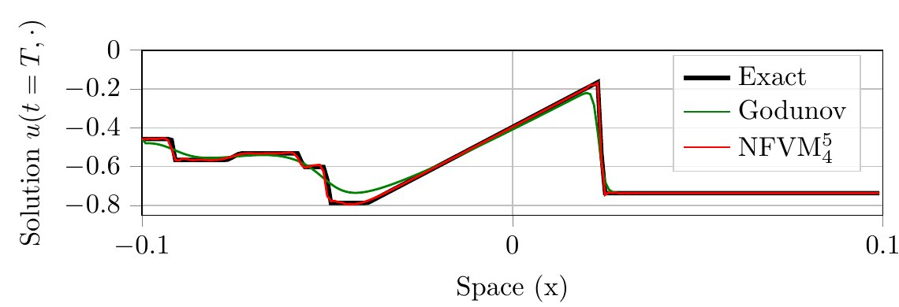

The questionWaves, fluid flows and road traffic are described by equations called conservation laws. Their solutions develop sudden jumps, like the back of a traffic jam, where classical solvers lose accuracy. We propose to learn only the flux of a classical finite volume solver, the flow between neighboring cells. The solver keeps its structure, so the solution stays conservative (nothing is created or lost), and it becomes more accurate than standard methods.
Picture a highway seen from above. The density is the number of cars per unit length, from zero (an empty road) to a maximum (bumper to bumper). Cars are neither created nor destroyed, so the density at a point changes only when more cars arrive than leave. That is a conservation law.
To use it, we need the flow, the number of cars passing a point per unit time. Flow is density times speed, and drivers slow down as the road fills up. So the flow first rises with density, then falls as the road jams. Each traffic model has its own flow curve, and we test six of them.
When fast, light traffic runs into slow, dense traffic, the density does not change gradually. It jumps, and the jump (called a shock) travels along the road. The back of a traffic jam is a shock. At the front of a jam, cars leave one after another and the density spreads out smoothly (a rarefaction wave). These sharp jumps are what make the equations hard to solve on a computer.

A finite volume method cuts the road into equal cells and keeps one number per cell, the average density in that cell. Time moves forward in small steps. At each step, the method estimates the flux at every interface between two cells, that is, how many cars cross that boundary during the step. Each cell then gains what flows in through one interface and loses what flows out through the other.
What leaves one cell enters the next, so no car is lost or created. The hard part is the flux. It depends on the exact solution at the interface, which the method does not know, so it must be estimated from the cell averages nearby. Classical schemes use hand-designed formulas. Godunov's scheme, for example, solves the simple problem of a single jump between the two neighboring cells.

Our neural finite volume method (NFVM) keeps this update and replaces only the flux formula. A small neural network reads the densities in the cells around an interface and outputs the flux there. The same network is used at every interface and every time step. In the simplest version it reads the two neighboring cells, like a classical first-order scheme, and has about 1,200 trained numbers (parameters). A larger version reads 4 cells over the last 5 time steps, with about 1,800 parameters.

We train the network in two ways. In the supervised version, it learns from examples whose exact solution is known: about 2,000 roads that start with a single jump in density (Riemann problems), whose solution can be written down exactly. In the unsupervised version (UNFVM), there are no solutions to copy. The network is trained so that its output satisfies the conservation law in its weak form, which checks the equation on average against many smooth weighting functions instead of point by point. This form still makes sense across jumps.
Since the network only replaces the flux, the solver keeps its bookkeeping: what leaves one cell enters the next. After each step we also clip the densities so they stay between empty and jammed. The clip can break exact conservation, but only where the solver is already wrong, and in practice removing it barely changes the accuracy.
For the two-cell version, we prove that some network does at least as well as the classical Lax–Friedrichs scheme, up to a margin as small as we like. Lax–Friedrichs converges to the exact solution as the grid is refined. So on a fine enough grid, the best network brings the error as low as we want, and we bound how large that network must be. This holds for both training modes. It concerns the best possible network, which training must still find.
An equation with jumps can have several weak solutions, and only one is physical (the entropy solution). We added no rule to pick it. In our tests, the unsupervised network's error still shrank as the grid was refined, at the same rate as Godunov's scheme, which suggests it reaches the physical solution. The learned fluxes do not have a property (monotonicity) that classical convergence proofs rely on. We think this freedom is part of why they are more accurate.
We compared against standard methods on 1,000 test roads that start with 10 stretches of different density, a harder setting than the single jumps used for training. On all six traffic models, both two-cell networks, supervised and unsupervised, had a lower average error than the three classical first-order schemes (Godunov, Lax–Friedrichs, Engquist–Osher). The supervised one also beat the higher-order schemes ENO and WENO on four of the six models.

The larger network, which reads 4 cells over 5 time steps, did much better. Its average squared error was 7.6 to 8.9 times lower than Godunov's scheme on the three equations where we tested it (two traffic models and Burgers' equation, a standard test case), and about 7 to 15 times lower than WENO. Only discontinuous Galerkin (DG), a more elaborate method, was more accurate, and our DG implementation is far slower.

We also trained the larger network on real highway traffic filmed by drone (400 m of a four-lane highway, recorded for 15 minutes), using only 70 seconds of data. It was the only model that reproduced the fine structure of the traffic waves. On plain average error, the best fitted classical schemes still scored better, because they predict smoother waves. On a measure that compares the timing of the waves, the network did better.